01
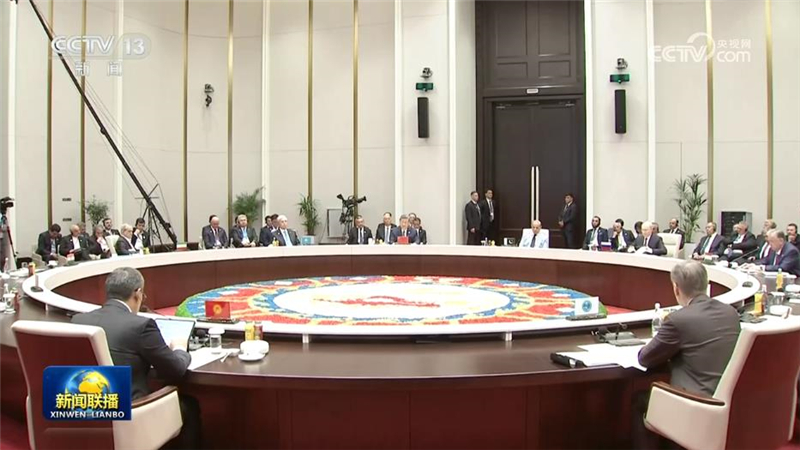
习近平出席上海合作组织成员国元首理事会第二十六次会议并发表重要讲话
当地时间9月1日上午，国家主席习近平在比什凯克出席上海合作组织成员国元首理事会第二十六次会议。
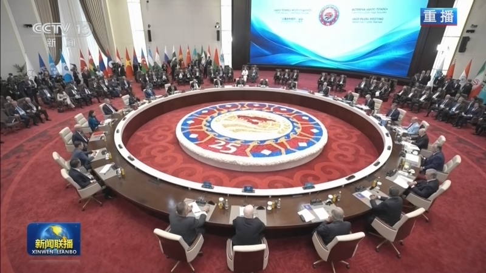

当地时间9月1日上午，国家主席习近平在比什凯克出席上海合作组织成员国元首理事会第二十六次会议。
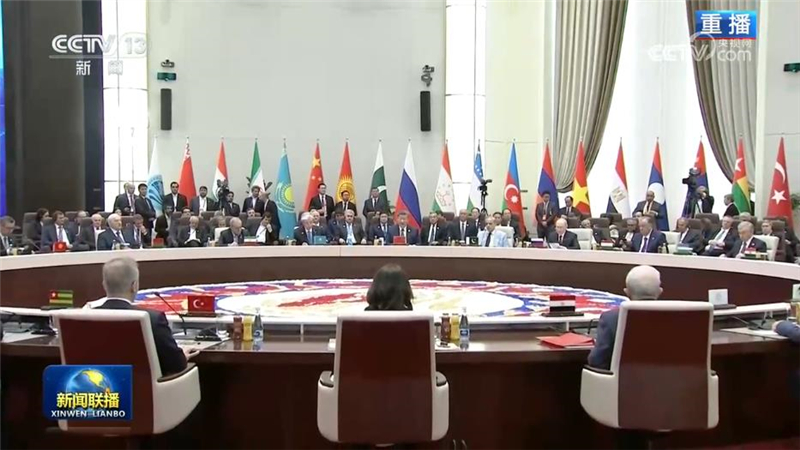
当地时间9月1日下午，国家主席习近平在比什凯克出席“上海合作组织+”会议并发表题为《共同倡导平等有序的世界多极化 实现更加公正合理的全球治理》的重要讲话。
本台今天（9月1日）播发央视快评《推动上海合作组织实现更高质量发展》。
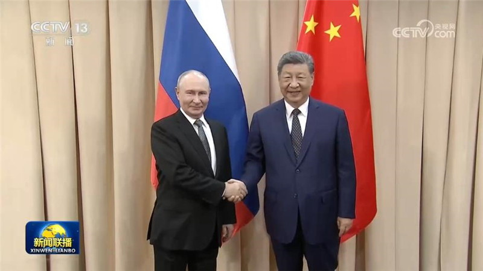
当地时间8月31日下午，国家主席习近平在比什凯克出席2026年上海合作组织峰会期间会见俄罗斯总统普京。
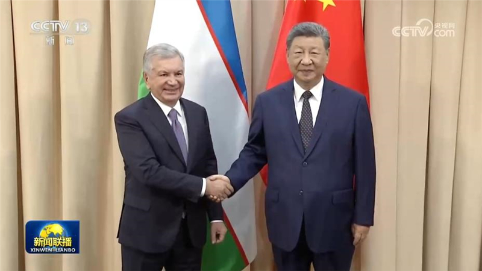
当地时间8月31日下午，国家主席习近平在比什凯克出席2026年上海合作组织峰会期间会见乌兹别克斯坦总统米尔济约耶夫。
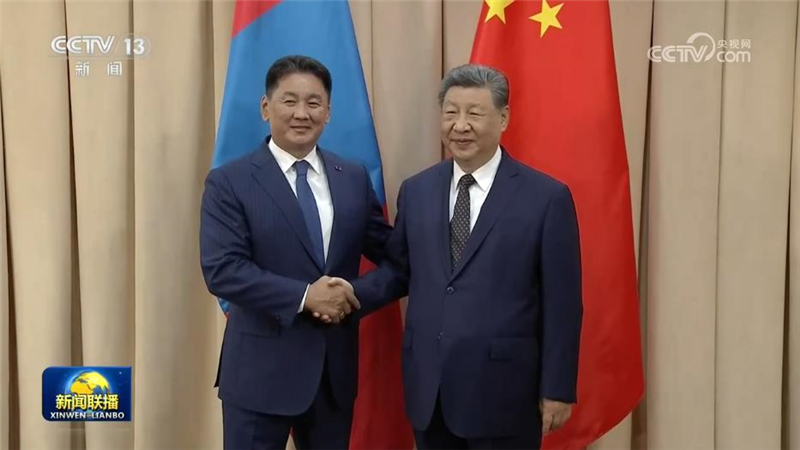
当地时间8月31日下午，国家主席习近平在比什凯克出席2026年上海合作组织峰会期间会见蒙古国总统呼日勒苏赫。
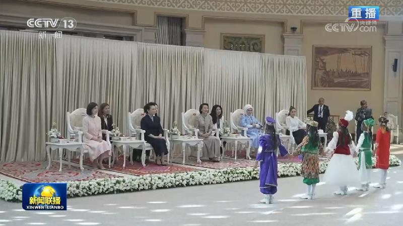
当地时间9月1日上午，国家主席习近平夫人彭丽媛在比什凯克出席吉尔吉斯斯坦总统夫人扎帕罗娃举行的2026年上海合作组织峰会配偶集体活动。
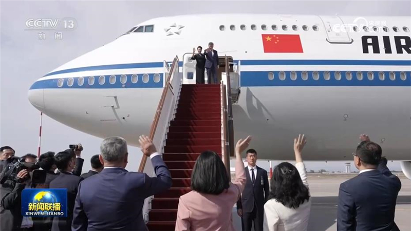
当地时间9月1日下午，国家主席习近平圆满结束出席2026年上海合作组织峰会和对吉尔吉斯斯坦的国事访问。
9月1日，在赴开罗对埃及进行国事访问之际，国家主席习近平在埃及《金字塔报》、《消息报》、《共和国报》发表题为《风雨同舟七十载，踔厉奋发新征程》的署名文章。文章全文如下：
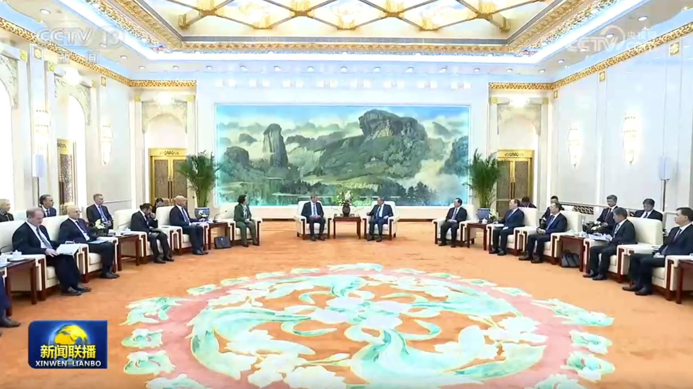
国务院总理李强1日下午在京会见美中贸易全国委员会董事会代表团。李强表示，今年5月，习近平主席同特朗普总统在北京举行会晤，达成一系列重要共识。中方愿同美方一道，遵循两国元首战略引领，拓展互利合作，妥善管控分歧，推动构建中美建设性战略稳定关系。中美加强经贸合作是双方内在需求，也是正确选择。中方愿积极推动解决美国来华企业合理诉求，也希望美方切实解决中方关切。……
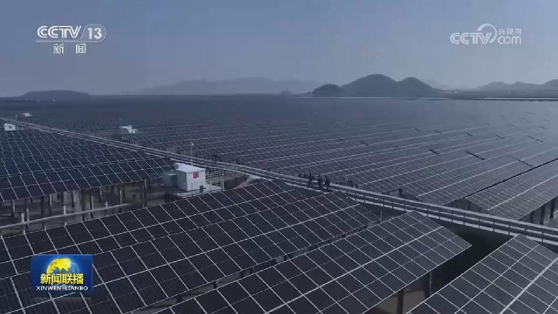
记者今天（9月1日）从国家能源局了解到，今年以来，我国光伏装机保持较快增长态势。截至7月底，全国光伏发电装机容量达到12.86亿千瓦，首次超过煤电，占到全国发电总装机的31.5%，成为我国电力装机第一大电源。
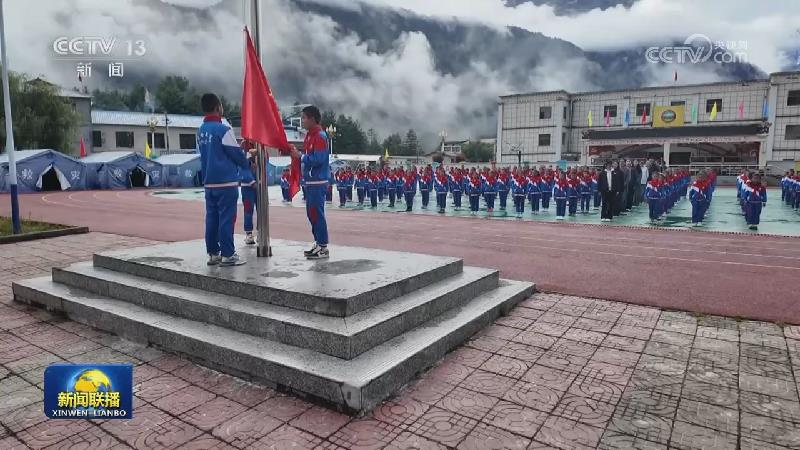
这两天，全国中小学幼儿园陆续开学，各地各校以科学探索、安全科普、“重走长征路”等形式多样的“开学第一课”开启新学期。
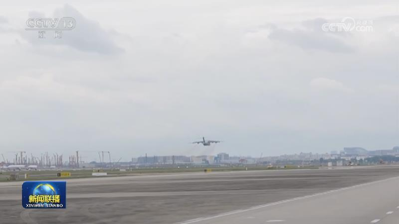
西藏吉隆县泥石流灾害抢险救援进入第7天。今天（9月1日）上午9时55分，西藏自治区在日喀则市公安局吉隆口岸分局举行遇难者哀悼活动，泥石流灾害救援现场、道路抢通现场等同步举行。
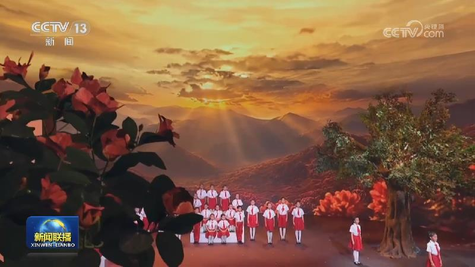
第23届中国—东盟博览会将于9月17日—21日在广西南宁举办
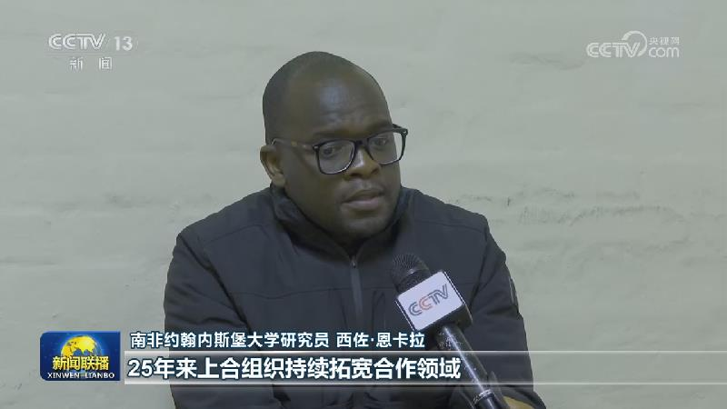
多国人士积极评价习近平主席今天（9月1日）在上合组织峰会上发表的重要讲话，认为讲话为完善全球治理提供了重要指引。
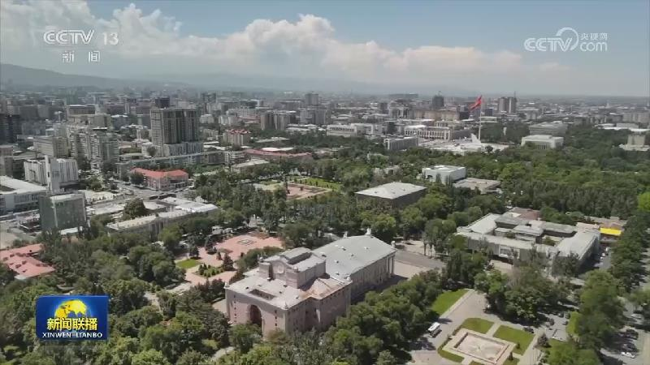
在中国国家主席习近平出席2026年上海合作组织峰会并对吉尔吉斯斯坦进行国事访问之际，由中国中央广播电视总台与吉尔吉斯斯坦国家电视广播公司、吉尔吉斯国立大学联合举办的《习近平谈治国理政》系列著作读书分享会“读懂中国之治”特别节目，在总台CGTN俄语频道和吉尔吉斯斯坦国家电视广播公司同步播出。
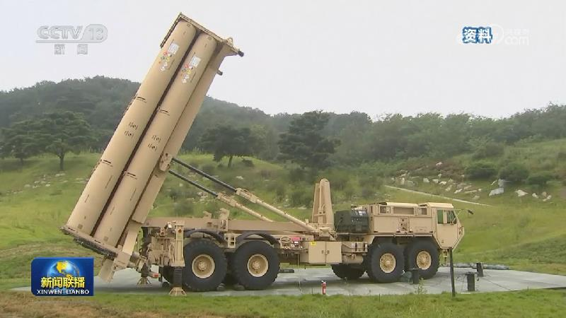
俄就军演计划向日本驻俄使馆提出交涉